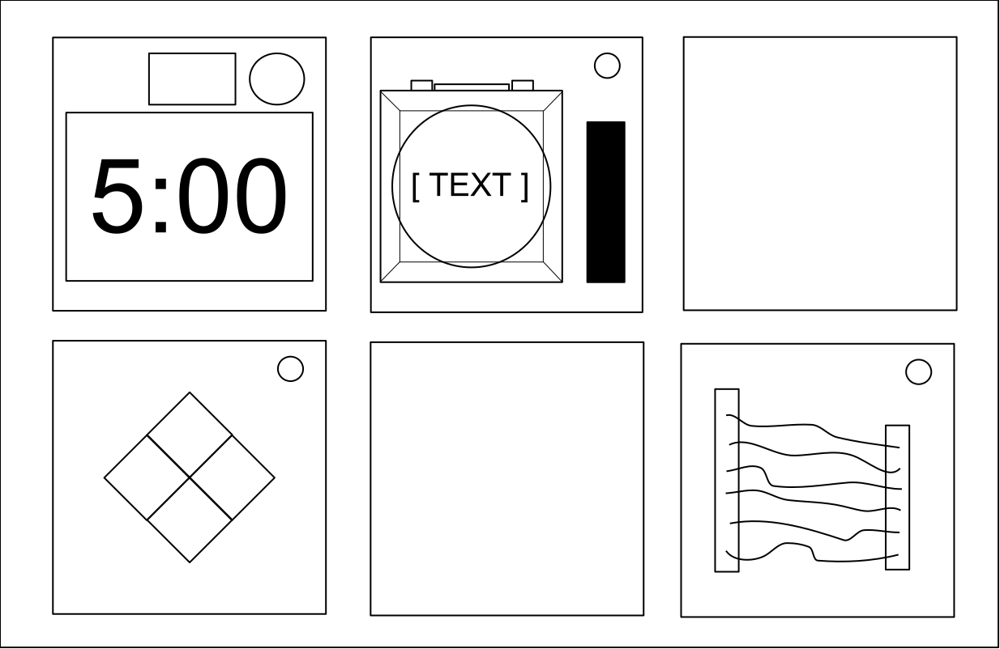
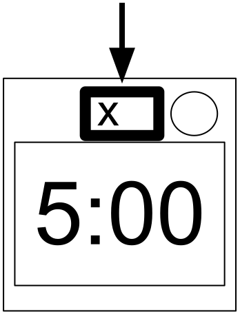
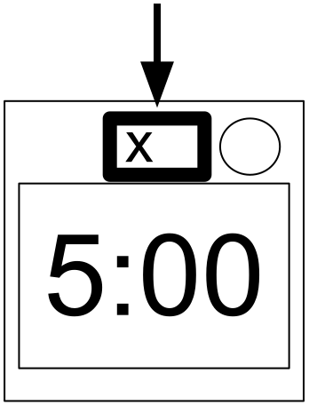
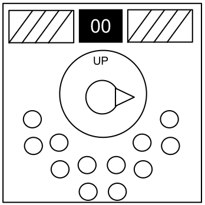
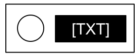

Keep Talking and Nobody Explodes v. 1
Introdução
Bem-vindo ao perigoso e desafiante mundo do desarmamento de bombas.
Estude esse manual cuidadosamente; você é o especialista. Nessas páginas você encontrará tudo que você precisa saber para desarmar até a mais insidiosa das bombas.
E lembre-se: um pequeno descuido e tudo pode se acabar!
Keep Talking and Nobody Explodes v. 1
Desarmando Bombas
Desarmando Bombas
Uma bomba explodirá quando seu marcador de contagem regressiva alcançar 0:00 ou quando muitas falhas tenham sido registradas. O único modo de desarmar uma bomba é desarmando todos os seus módulos antes que a contagem expire.
Bomba de exemplo
|  Frente |  Lado |
Módulos
Cada bomba incluirá até 11 módulos que precisam ser desarmados. Cada módulo é distinto e pode ser desarmado em qualquer ordem.
Instruções para o desarmamento de módulos podem ser encontradas na Seção 1. Módulos "Carentes" apresentam um caso especial e são descritos na Seção 2.
Falhas
Indicador de Falhas


Quando o Desarmador cometer um erro a bomba irá registrar uma falha que será exibida no indicador acima do marcador de contagem regressiva. Bombas com indicador de falhas explodirão na terceira falha. O marcador começará a contar regressivamente mais rápido depois que uma falha tenha sido registrada.
Se nenhum indicador de falhas estiver presente acima do marcador a bomba explodirá na primeira falha, não permitindo erros.
Obtendo Informações
Algumas instruções de desarmamento requererão informações específicas sobre a bomba, como o número de série. Esse tipo de informação pode ser encontrado geralmente no topo, em baixo ou nos lados do revestimento da bomba. Veja os apêndices A, B e C para instruções de identificação que serão úteis no desarmamento de certos módulos.
Keep Talking and Nobody Explodes v. 1
Seção 1: Módulos

Seção 1: Módulos
Módulos podem ser identificados por um LED no canto superior direito. Quando esse LED estiver emitindo a luz verde o módulo foi desarmado.
Todos os módulos devem ser desarmados para que a bomba seja desarmada.
Keep Talking and Nobody Explodes v. 1
Fios

Sobre Fios
Fios são o fluído vital dos eletrônicos! Espere, não, eletricidade é o fluído vital. Fios são mais como as artérias. As veias? Não importa...
- Um módulo de fios pode possuir 3 a 6 fios.
- Somente o único fio correto precisa ser cortado para desarmar o módulo.
- A ordem dos fios começa com o primeiro do topo.
| 3 fios: Se não existem fios vermelhos, corte o segundo fio. Caso contrário, se o último fio é branco, corte o último fio. Caso contrário, se existe mais que um fio azul, corte o último fio azul. Caso contrário, corte o último fio. |
| 4 fios: Se existe mais que um fio vermelho e o último dígito do número de série é ímpar, corte o último fio vermelho. Caso contrário, se o último fio é amarelo e não existem fios vermelhos, corte o primeiro fio. Caso contrário, se existe exatamente um fio azul, corte o primeiro fio. Caso contrário, se tem mais que um fio amarelo, corte o último fio. Caso contrário, corte o segundo fio. |
| 5 fios: Se o último fio é preto e o último dígito do número de série é ímpar, corte o quarto fio. Caso contrário, se existe exatamente um fio vermelho e tem mais que um fio amarelo, corte o primeiro fio. Caso contrário, se não existe nenhum fio preto, corte o segundo fio. Caso contrário, corte o primeiro fio. |
| 6 fios: Se não existem fios amarelos e o último dígito do número de série é ímpar, corte o terceiro fio. Caso contrário, se existe exatamente um fio amarelo e existe mais que um fio branco, corte o quarto fio. Caso contrário, se não existe nenhum fio vermelho, corte o último fio. Caso contrário, corte o quarto fio. |
Keep Talking and Nobody Explodes v. 1
O Botão

Sobre O Botão
Você pode pensar que um botão te dizendo para apertá-lo é bem direto. Esse é o tipo de pensamento que fazem as pessoas explodirem.
Veja o Apêndice A para referência de identificação de indicadores.
Veja o Apêndice B para referência de identificação de baterias.
Siga essas regras na ordem que elas são listadas. Execute a primeira ação que se aplica:
- Se o botão é azul e o botão diz "Abort", segure o botão e remeta a "Soltando um Botão Segurado".
- Se existe mais que 1 bateria na bomba e o botão diz "Detonate", aperte e imediatamente solte o botão.
- Se o botão é branco e tem um indicador acesso com o rótulo CAR, segure o botão e remeta a "Soltando um Botão Segurado".
- Se existem mais que 2 baterias na bomba e tem um indicador aceso com o rótulo FRK, aperte e imediatamente solte o botão.
- Se o botão é amarelo, segure o botão e remeta a "Soltando um Botão Segurado".
- Se o botão é vermelho e o botão diz "Hold", aperte e imediatamente solte o botão.
- Se nenhuma das acima se aplica, aperte o botão e remeta a "Soltando um Botão Segurado".
Soltando um Botão Segurado
Se você começar a segurar o botão, uma faixa colorida vai acender no lado direito do módulo. Baseado na sua cor você deve soltar o botão em um ponto específico no tempo:
- Faixa azul: solte quando o marcador de contagem regressiva tiver um 4 em qualquer posição.
- Faixa branca: solte quando o marcador de contagem regressiva tiver um 1 em qualquer posição.
- Faixa amarela: solte quando o marcador de contagem regressiva tiver um 5 em qualquer posição.
- Qualquer outra cor de faixa: solte quando o marcador de contagem regressiva tiver um 1 em qualquer posição.
Keep Talking and Nobody Explodes v. 1
Teclados

Sobre Teclados
Eu não tenho certeza o que esses símbolos são, mas eu suspeito que eles têm alguma coisa a ver com o oculto.
- Somente uma coluna abaixo tem todos os quatro símbolos do teclado.
- Aperte os quatro botões na ordem que seus símbolos aparecem do topo à base dentro da coluna.
 |  |  |  | |||||||
 | |  |  |  | | |||||
 |  |  |  | |  | |||||
 | |  |  |  |  | |||||
|  |  | | | | |||||
 | | |  |  | ||||||
| | | |  |  |
Keep Talking and Nobody Explodes v. 1
Siga o Mestre

Sobre Siga o Mestre
Esse é como um desses brinquedos que você brincava quando criança onde você deve acertar o padrão que aparece, exceto que esse é uma cópia provavelmente comprada em uma loja de 1,99.
- Um dos quatro botões coloridos vai piscar.
- Usando a tabela correta abaixo, aperte o botão com a cor correspondente.
- O botão original piscará, seguido por outro. Repita essa sequência em ordem usando o mapeamento de cores.
- A sequência se alongará de um em um cada vez que você entrar corretamente a sequência até que o módulo seja desarmado.
Se o número de série contém uma vogal:
| Luz Vermelha | Luz Azul | Luz Verde | Luz Amarela | ||
|---|---|---|---|---|---|
| Botão a apertar: | Sem Falhas | Azul | Vermelho | Amarelo | Verde | 1 Falha | Amarelo | Verde | Azul | Vermelho | 2 Falhas | Verde | Vermelho | Amarelo | Azul |
Se o número de série não contém uma vogal:
| Luz Vermelha | Luz Azul | Luz Verde | Luz Amarela | ||
|---|---|---|---|---|---|
| Botão a apertar: | Sem Falhas | Azul | Amarelo | Verde | Vermelho | 1 Falha | Vermelho | Azul | Amarelo | Verde | 2 Falhas | Amarelo | Verde | Azul | Vermelho |
Keep Talking and Nobody Explodes v. 1
Quem está na Primeira

Sobre Quem está na Primeira
Essa geringonça é como algo saído de um esquete de comédia, que poderia ser cômico se não estivesse conectada a uma bomba. Eu vou manter isso breve, visto que palavras somente complicam as coisas.
- Leia o visor e use o passo 1 para determinar que rótulo de botão a ler.
- Usando esse rótulo do botão, use o passo 2 para determinar que botão a apertar.
- Repita até que o módulo tenha sido desarmado.
Passo 1:
Baseado no visor, leia o rótulo do botão específico e proceda ao passo 2:
|
|
|
|
|
| ||||||||||||||||||||||||||||||||||||||||||||||||
|
|
|
|
| |||||||||||||||||||||||||||||||||||||||||||||||||
|
|
|
|
|
| ||||||||||||||||||||||||||||||||||||||||||||||||
|
|
|
|
|
| ||||||||||||||||||||||||||||||||||||||||||||||||
|
|
|
| ||||||||||||||||||||||||||||||||||||||||||||||||||
Keep Talking and Nobody Explodes v. 1
Quem está na Primeira
Passo 2:
Usando o rótulo do passo 1, aperte o primeiro botão que aparece em sua lista correspondente:
| "READY": | YES, OKAY, WHAT, MIDDLE, LEFT, PRESS, RIGHT, BLANK, READY, NO, FIRST, UHHH, NOTHING, WAIT |
|---|---|
| "FIRST": | LEFT, OKAY, YES, MIDDLE, NO, RIGHT, NOTHING, UHHH, WAIT, READY, BLANK, WHAT, PRESS, FIRST |
| "NO": | BLANK, UHHH, WAIT, FIRST, WHAT, READY, RIGHT, YES, NOTHING, LEFT, PRESS, OKAY, NO, MIDDLE |
| "BLANK": | WAIT, RIGHT, OKAY, MIDDLE, BLANK, PRESS, READY, NOTHING, NO, WHAT, LEFT, UHHH, YES, FIRST |
| "NOTHING": | UHHH, RIGHT, OKAY, MIDDLE, YES, BLANK, NO, PRESS, LEFT, WHAT, WAIT, FIRST, NOTHING, READY |
| "YES": | OKAY, RIGHT, UHHH, MIDDLE, FIRST, WHAT, PRESS, READY, NOTHING, YES, LEFT, BLANK, NO, WAIT |
| "WHAT": | UHHH, WHAT, LEFT, NOTHING, READY, BLANK, MIDDLE, NO, OKAY, FIRST, WAIT, YES, PRESS, RIGHT |
| "UHHH": | READY, NOTHING, LEFT, WHAT, OKAY, YES, RIGHT, NO, PRESS, BLANK, UHHH, MIDDLE, WAIT, FIRST |
| "LEFT": | RIGHT, LEFT, FIRST, NO, MIDDLE, YES, BLANK, WHAT, UHHH, WAIT, PRESS, READY, OKAY, NOTHING |
| "RIGHT": | YES, NOTHING, READY, PRESS, NO, WAIT, WHAT, RIGHT, MIDDLE, LEFT, UHHH, BLANK, OKAY, FIRST |
| "MIDDLE": | BLANK, READY, OKAY, WHAT, NOTHING, PRESS, NO, WAIT, LEFT, MIDDLE, RIGHT, FIRST, UHHH, YES |
| "OKAY": | MIDDLE, NO, FIRST, YES, UHHH, NOTHING, WAIT, OKAY, LEFT, READY, BLANK, PRESS, WHAT, RIGHT |
| "WAIT": | UHHH, NO, BLANK, OKAY, YES, LEFT, FIRST, PRESS, WHAT, WAIT, NOTHING, READY, RIGHT, MIDDLE |
| "PRESS": | RIGHT, MIDDLE, YES, READY, PRESS, OKAY, NOTHING, UHHH, BLANK, LEFT, FIRST, WHAT, NO, WAIT |
| "YOU": | SURE, YOU ARE, YOUR, YOU'RE, NEXT, UH HUH, UR, HOLD, WHAT?, YOU, UH UH, LIKE, DONE, U |
| "YOU ARE": | YOUR, NEXT, LIKE, UH HUH, WHAT?, DONE, UH UH, HOLD, YOU, U, YOU'RE, SURE, UR, YOU ARE |
| "YOUR": | UH UH, YOU ARE, UH HUH, YOUR, NEXT, UR, SURE, U, YOU'RE, YOU, WHAT?, HOLD, LIKE, DONE |
| "YOU'RE": | YOU, YOU'RE, UR, NEXT, UH UH, YOU ARE, U, YOUR, WHAT?, UH HUH, SURE, DONE, LIKE, HOLD |
| "UR": | DONE, U, UR, UH HUH, WHAT?, SURE, YOUR, HOLD, YOU'RE, LIKE, NEXT, UH UH, YOU ARE, YOU |
| "U": | UH HUH, SURE, NEXT, WHAT?, YOU'RE, UR, UH UH, DONE, U, YOU, LIKE, HOLD, YOU ARE, YOUR |
| "UH HUH": | UH HUH, YOUR, YOU ARE, YOU, DONE, HOLD, UH UH, NEXT, SURE, LIKE, YOU'RE, UR, U, WHAT? |
| "UH UH": | UR, U, YOU ARE, YOU'RE, NEXT, UH UH, DONE, YOU, UH HUH, LIKE, YOUR, SURE, HOLD, WHAT? |
| "WHAT?": | YOU, HOLD, YOU'RE, YOUR, U, DONE, UH UH, LIKE, YOU ARE, UH HUH, UR, NEXT, WHAT?, SURE |
| "DONE": | SURE, UH HUH, NEXT, WHAT?, YOUR, UR, YOU'RE, HOLD, LIKE, YOU, U, YOU ARE, UH UH, DONE |
| "NEXT": | WHAT?, UH HUH, UH UH, YOUR, HOLD, SURE, NEXT, LIKE, DONE, YOU ARE, UR, YOU'RE, U, YOU |
| "HOLD": | YOU ARE, U, DONE, UH UH, YOU, UR, SURE, WHAT?, YOU'RE, NEXT, HOLD, UH HUH, YOUR, LIKE |
| "SURE": | YOU ARE, DONE, LIKE, YOU'RE, YOU, HOLD, UH HUH, UR, SURE, U, WHAT?, NEXT, YOUR, UH UH |
| "LIKE": | YOU'RE, NEXT, U, UR, HOLD, DONE, UH UH, WHAT?, UH HUH, YOU, LIKE, SURE, YOU ARE, YOUR |
Keep Talking and Nobody Explodes v. 1
Memória

Sobre Memória
Memória é uma coisa frágil, mas também é todo o resto quando uma bomba dispara, então preste atenção!
- Aperte o botão correto para progredir o módulo para a próxima fase. Complete todas as fases para desarmar o módulo.
- Pressionar um botão incorreto retornará o módulo de volta à fase 1.
- As posições dos botões são ordenadas da esquerda para a direita.
Fase 1:
Se o visor é 1, aperte o botão na segunda posição.
Se o visor é 2, aperte o botão na segunda posição.
Se o visor é 3, aperte o botão na terceira posição.
Se o visor é 4, aperte o botão na quarta posição.
Fase 2:
Se o visor é 1, aperte o botão com o rótulo "4".
Se o visor é 2, aperte o botão na mesma posição que você pressionou na fase 1.
Se o visor é 3, aperte o botão na primeira posição.
Se o visor é 4, aperte o botão na mesma posição que você pressionou na fase 1.
Fase 3:
Se o visor é 1, aperte o botão com o mesmo rótulo que você pressionou na fase 2.
Se o visor é 2, aperte o botão com o mesmo rótulo que você pressionou na fase 1.
Se o visor é 3, aperte o botão na terceira posição.
Se o visor é 4, aperte o botão com o rótulo "4".
Fase 4:
Se o visor é 1, aperte o botão na mesma posição que você pressionou na fase 1.
Se o visor é 2, aperte o botão na primeira posição.
Se o visor é 3, aperte o botão na mesma posição que você pressionou na fase 2.
Se o visor é 4, aperte o botão na mesma posição que você pressionou na fase 2.
Fase 5:
Se o visor é 1, aperte o botão com o mesmo rótulo que você pressionou na fase 1.
Se o visor é 2, aperte o botão com o mesmo rótulo que você pressionou na fase 2.
Se o visor é 3, aperte o botão com o mesmo rótulo que você pressionou na fase 4.
Se o visor é 4, aperte o botão com o mesmo rótulo que você pressionou na fase 3.
Keep Talking and Nobody Explodes v. 1
Código Morse
Sobre Código Morse
Uma forma antiquada de comunicação naval? O que vem depois? Pelo menos é Código Morse genuíno, então preste atenção e você pode aprender algo.
- Interprete o sinal a partir da luz piscante usando o quadro de Código Morse para soletrar uma das palavras na tabela.
- O sinal irá se repetir indefinitivamente, com uma longa lacuna entre as repetições.
- Uma vez que a palavra estiver identificada, configure a frequência correspondente e aperte o botão de transmissão (TX).
| Se a palavra é: | Responda na frequência: |
|---|---|
| shell | 3.505 MHz |
| halls | 3.515 MHz |
| slick | 3.522 MHz |
| trick | 3.532 MHz |
| boxes | 3.535 MHz |
| leaks | 3.542 MHz |
| strobe | 3.545 MHz |
| bistro | 3.552 MHz |
| flick | 3.555 MHz |
| bombs | 3.565 MHz |
| break | 3.572 MHz |
| brick | 3.575 MHz |
| steak | 3.582 MHz |
| sting | 3.592 MHz |
| vector | 3.595 MHz |
| beats | 3.600 MHz |
Keep Talking and Nobody Explodes v. 1
Fios Complicados

Sobre Fios Complicados
Esses fios não são como os outros. Alguns tem listras! Isso os fazem completamente diferentes. A boa notícia é que nós encontramos um conjunto conciso de instruções explicando o que fazer sobre isso! Talvez muito conciso...
- Olhe para cada fio: tem um LED acima do fio e um espaço para um símbolo de "★" abaixo do fio.
- Para cada combinação de fio/LED/símbolo, use o diagrama de Venn abaixo para decidir cortar ou não o fio.
- Cada fio pode ser listrado com múltiplas cores.
| Letra | Instrução |
|---|---|
| C | Corte o fio |
| D | Não corte o fio |
| S | Corte o fio se o último dígito do número de série é par |
| P | Corte o fio se a bomba tem uma porta paralela |
| B | Corte o fio se a bomba tem duas ou mais baterias |
Veja o Apêndice B para referência de identificação de baterias.
Veja o Apêndice C para referência de identificação de portas.
Keep Talking and Nobody Explodes v. 1
Sequências de Fios

Sobre Sequências de Fios
É difícil dizer como esse mecanismo funciona. A engenharia é bem impressionante, mas deve existir um jeito mais fácil de manejar nove fios.
- Dentro do módulo existem alguns painéis com fios neles, mas somente um painel é visível por vez. Troque para o próximo painel usando o botão para baixo e para o painel anterior usando o botão para cima.
- Não troque para o próximo painel até que você tenha certeza que você cortou todos os fios necessários no painel atual.
- Corte os fios conforme direcionado pela tabela a seguir. Ocorrências de fios são cumulativas através de todos os painéis dentro do módulo.
| Ocorrências de Fios Vermelhos | |
|---|---|
| Ocorrência do Fio | Corte se conectado a: |
| 1ª ocorrência vermelha | C |
| 2ª ocorrência vermelha | B |
| 3ª ocorrência vermelha | A |
| 4ª ocorrência vermelha | A ou C |
| 5ª ocorrência vermelha | B |
| 6ª ocorrência vermelha | A ou C |
| 7ª ocorrência vermelha | A, B ou C |
| 8ª ocorrência vermelha | A ou B |
| 9ª ocorrência vermelha | B |
| Ocorrências de Fios Azuis | |
|---|---|
| Ocorrência do Fio | Corte se conectado a: |
| 1ª ocorrência azul | B |
| 2ª ocorrência azul | A ou C |
| 3ª ocorrência azul | B |
| 4ª ocorrência azul | A |
| 5ª ocorrência azul | B |
| 6ª ocorrência azul | B ou C |
| 7ª ocorrência azul | C |
| 8ª ocorrência azul | A ou C |
| 9ª ocorrência azul | A |
| Ocorrências de Fios Pretos | |
|---|---|
| Ocorrência do Fio | Corte se conectado a: |
| 1ª ocorrência preta | A, B ou C |
| 2ª ocorrência preta | A ou C |
| 3ª ocorrência preta | B |
| 4ª ocorrência preta | A ou C |
| 5ª ocorrência preta | B |
| 6ª ocorrência preta | B ou C |
| 7ª ocorrência preta | A ou B |
| 8ª ocorrência preta | C |
| 9ª ocorrência preta | C |
Keep Talking and Nobody Explodes v. 1
Labirintos

Sobre Labirintos
Isso parece ser algum tipo de labirinto, provavelmente roubado de algum jogo americano de restaurante.
- Encontre o labirinto com as marcações circulares correspondentes.
- O desarmador deve navegar com a luz branca para o triângulo vermelho usando os botões de seta.
- Aviso: Não atravesse as linhas exibidas no labirinto. Essas linhas são invisíveis na bomba.


Keep Talking and Nobody Explodes v. 1
Senhas

Sobre Senhas
Felizmente essa senha não aparenta cumprir os requisitos de segurança do padrão governamental: 22 caracteres, com maiúsculas e minúsculas, números em ordem aleatória e sem nenhum palíndromo com comprimento acima de 3.
- Os botões acima e abaixo de cada letra vão circular através das possibilidades para aquela posição.
- Apenas uma combinação das letras disponíveis irá corresponder a uma senha abaixo.
- Aperte o botão "submit" assim que a palavra correta tenha sido configurada.
| about | after | again | below | could |
| every | first | found | great | house |
| large | learn | never | other | place |
| plant | point | right | small | sound |
| spell | still | study | their | there |
| these | thing | think | three | water |
| where | which | world | would | write |
Keep Talking and Nobody Explodes v. 1
Seção 2: Módulos Carentes

Seção 2: Módulos Carentes
Módulos Carentes não podem ser desarmados, logo apresentam um perigo recorrente.
Módulos Carentes podem ser identificados como um módulo com um pequeno contador de 2 dígitos no topo central. Interagir com a bomba pode fazer com que eles se tornem ativos. Uma vez ativados esses módulos carentes precisam ser vigiados regularmente antes que seu contador expire a fim de prevenir uma falha.
Fique atento: módulos carentes podem reativar a qualquer hora.
Keep Talking and Nobody Explodes v. 1
Saída de Gás

Sobre Saída de Gás
Invadir computadores é um trabalho difícil! Bem, costuma ser. Seu trabalho poderia provavelmente ser executado por um simples pássaro de brinquedo apertando a mesma tecla repetidamente.
- Responda às perguntas do computador pressionando "Y" para "Sim" e "N" para "Não".
Keep Talking and Nobody Explodes v. 1
Descarga de Capacitor

Sobre Descarga de Capacitor
Em vou supor que isso foi feito apenas para ocupar a sua atenção, porque caso contrário isso é um trabalho de eletrônica bem mal feito.
- Descarregue o capacitor antes que ele sobrecarregue segurando a alavanca para baixo.
Keep Talking and Nobody Explodes v. 1
Controles

Sobre Controles
Desnecessariamente complicado e infinitamente carente. Imagine se tal expertise fosse usada para fazer algo além que quebra-cabeças diabólicos.
- O controle pode estar voltado para uma de quatro posições diferentes.
- O controle precisa estar na posição correta quando o contador do módulo atingir zero.
- A posição correta pode ser determinada pelas configurações de ligado/desligado dos doze LEDs.
- As posições do controle são relativas ao rótulo "UP", que pode estar reposicionado.
Configurações de LED
Posição para Cima:
| X | X | X | |||
| X | X | X | X | X |
| X | X | X | |||
| X | X | X | X |
Posição para Baixo:
| X | X | X | |||
| X | X | X | X | X |
| X | X | X | |||
| X | X |
Posição para Esquerda:
| X | |||||
| X | X | X | X |
| X | |||||
| X | X |
Posição para Direita:
| X | X | X | X | X | |
| X | X | X | X |
| X | X | X | |||
| X | X | X | X |
X = LED Aceso
Keep Talking and Nobody Explodes v. 1
Apêndice A
Apêndice A: Referência de Identificação de Indicadores
Luzes indicadoras rotuladas podem ser encontradas dos lados do revestimento da bomba.
Indicadores Comuns
- SND
- CLR
- CAR
- IND
- FRQ
- SIG
- NSA
- MSA
- TRN
- BOB
- FRK
Keep Talking and Nobody Explodes v. 1
Apêndice B
Apêndice B: Referência de Identificação de Baterias
Tipos comuns de baterias podem ser encontradas dentro de invólucros nos lados do revestimento da bomba.
| Bateria | Tipo |
|---|---|
 | AA |
 | D |
Keep Talking and Nobody Explodes v. 1
Apêndice C
Apêndice C: Referência de Identificação de Portas
Portas digitais e analógicas podem ser encontradas nos lados do revestimento da bomba.
| Porta | Nome |
|---|---|
 | DVI-D |
 | Paralela |
 | PS/2 |
 | RJ-45 |
 | Serial |
| Estéreo RCA |